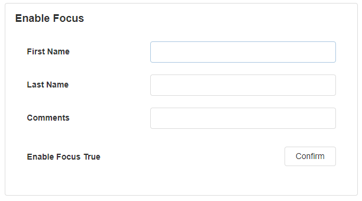

Alert Action
Configure a button to perform one of the following actions on an open Recommendation Alert:
- Mark As Resolved
- Mark As False Positive
- Save
- Share
- Assign
The button text - and in some cases the icon - are defaulted when the action property is selected, but the designer can override these properties.
The action button will be disabled at run-time should the alert be archived.
Fig 1: Alert Action
Alert Action Properties
Appearance
Common Properties
Properties that are common to most Blocks include visible, styling mode, tooltip, and icon;
See the Common Properties article for more details on common appearance properties.
Type
The type of the button can be changed depending on its purpose. Options include danger, normal, success, and default.

Text
The text that shows on top of the Button.
Behavior
Common Properties
Properties that are common to most Blocks include disabled;
See the Common Properties article for more details on common behavior properties.
Alert ID
Supply an Alert Identifier on which the selected action will be performed.
Action
The action to be performed on the alert.
| Action | Description |
|---|---|
| Mark as Resolved | Someone reviewed the issue, took mitigation steps, and considered the matter resolved. |
| Mark as False Positive | Someone reviewed the issue, determined that the asset doesn't have an issue or it was triggered while in Maintenance/Service mode, and considered the matter closed. |
| Save | Saves the changes made on the Recommendation Alert. |
| Share | Ability to share the Recommendation Alert to users that have run access to the Recommendation. Selected users will receive an email with the note and a link to the Recommendation Alert. |
| Assign | Ability to Assign (or Reassign) responsibility for the Recommendation Alert to a user that has run access to the Recommendation. The default selection is the logged-in user. When this action is performed, the action is recorded on the Timeline and in the Discussion - thus notifying the assignee. |
Enable Focus
This determines if the user can navigate to the Button by using the keyboard. This includes using the tab button to switch between text boxes on a form, and then clicking the tab button at the end to highlight and select the Button. Buttons will also be focused on when you click on them. If a Button is clicked, and no action occurs, the Button will also remain in focus.

Action
Configure actions to be triggered when the user clicks the button.
For detailed instructions see the Common Properties article for more details
Last modified: September 16, 2025